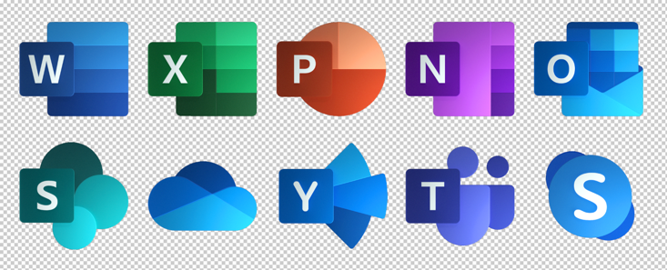

Curriculum Vitae
Opleiding
| Opleiding + school | Jaar |
|---|---|
| Graduaat Systeem -en Netwerkbeheer (1ste jaar) - Thomas More Geel | 2021 - heden |
| Sociale Technische Wetenschappen (TSO) - BuSO Sint-Elisabeth Campus OV4 Pelt | 2017 - 2021 |
| Sociale Technische Wetenschappen (TSO) - WICO Campus Sint-Maria Pelt | 2016 - 2017 |
| Sociale Technische Vorming (TSO) - WICO Campus Sint-Maria Pelt | 2014 - 2016 |
Werkervaring
| Functie + school | Jaar |
|---|---|
| Digi-assistent - Binnenhof / Pelle-Melle, Pelt | Zomervakantie 2021 |
| Technische Dienst - Mariaziekenhuis, Pelt | augustus 2019 |
Talenkennis
Nederlands: moedertaal
Frans: schoolkennis
Engels: schoolkennis
Varia
Leidinggevende capaciteiten
4 jaar animator bij SPW De Speelvogels te Pelt
Andere behaalde attesten


